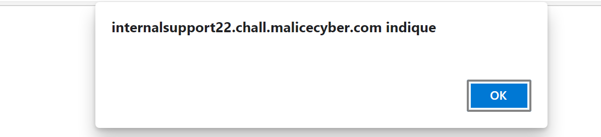
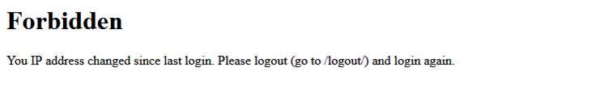

Capture The Flag > DGHack 2020 > Internal Support 2
URL: http://internalsupport22.chall.malicecyber.com/
This challenge is supposed to have corrected the XSS vulnerability that we've found on the previous challenge. Reaching the URL, we are facing the same login page as the first challenge (Internal Support).

The interface is the same as the first challenge, let's see what kind of vulnerability they have corrected. After creating an account, let's enter the same JavaScript to see if there is the same XSS vulnerability.
On this case, we have "Malicious code detected", which means that we cannot inject JavaScript code in a simple way, except if we find a way to bypass it. Many web applications check if there is a script element in the form, so we can modify it by something like ScRiPt.

And it works ! We bypass the protection by adding some upperletters in the script element. Now, we know that it is possible to inject JavaScript, let's see if the cookie vulnerability is still there
In the Developer tools, we see that the field "HttpOnly" is set to false, so we can still retrieve user's cookie by using JavaScript document.cookie. So as the first challenge, we are redirecting the user with window.location and getting the user cookie with document.cookie.
We proceed the same way as the first challenge, let's get the user cookie from pipedream and replace our cookie by his. Once I changed the cookie value and refresh the page, I get an error.

After changing the IP address by going through a proxy or a VPN, I still managed to log into my account. May be the admin account have a IP address verification so only the IP addresses inside of a whitelist can log into an admin account. To bypass this protection we can used Burp to forge any HTML request, but first, we have to find the IP address used by an administrator. When our pipedream endpoint receive the request, we also have the information regarding the IP address used by the administrator.